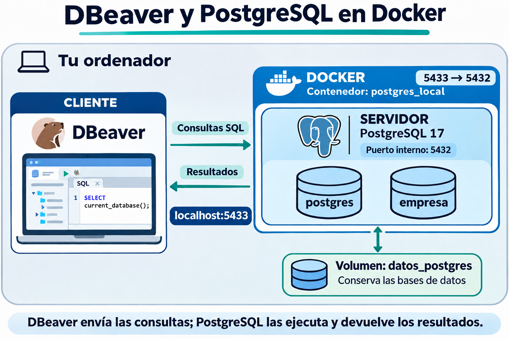
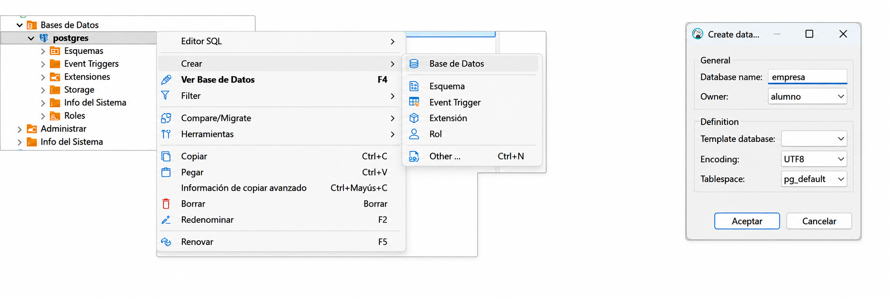
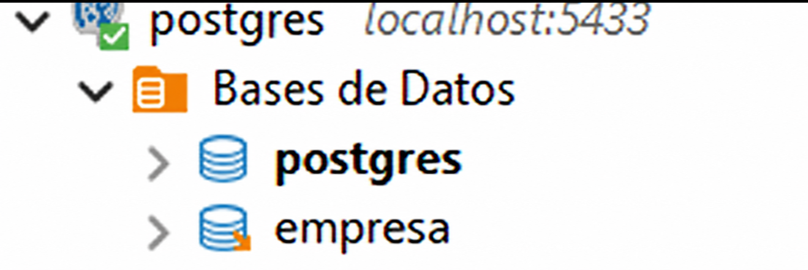
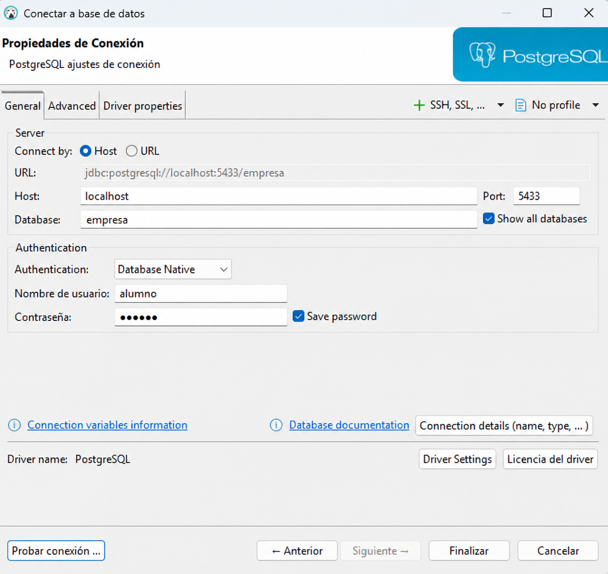
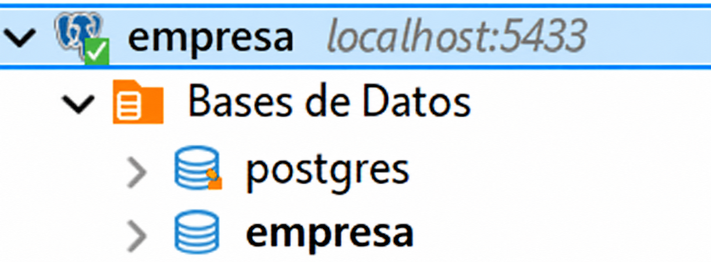
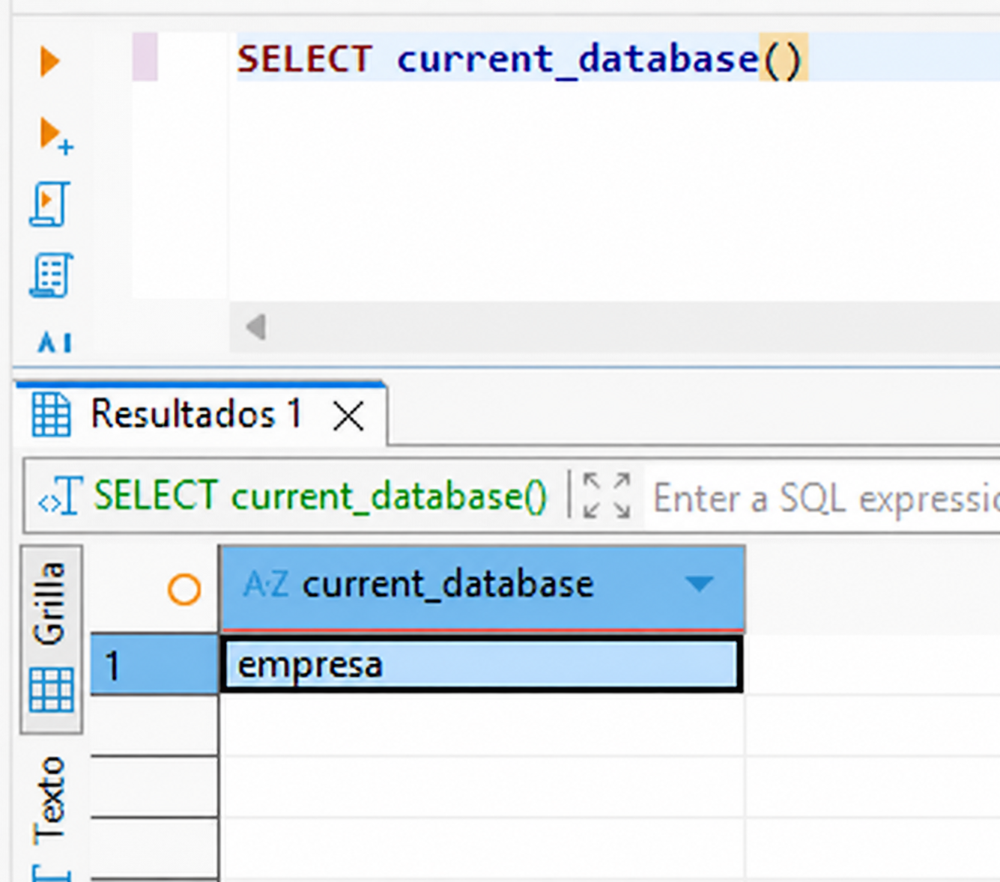

Bases de Datos
Una base de datos contiene los esquemas y objetos con los que trabajaremos. CREATE DATABASE crea una base de datos nueva dentro del servidor PostgreSQL; después debemos conectarnos a ella para crear sus tablas.
Sintaxis básica
CREATE DATABASE nombre_bd [ OWNER nombre_usuario ]; |
Opciones
nombre_bd: nombre de la nueva base de datos.OWNER: indica su propietario; si se omite, será el usuario que ejecuta la sentencia.
Primero crearemos empresa y su conexión, como ejemplo guiado. Después crearás juegos, como ejercicio 0. Ambas bases de datos estarán en el servidor PostgreSQL que preparamos en Inicio.
Ejemplo guiado: Crear Empresa y su conexión
Vamos a crear una base de datos llamada empresa para los ejemplos guiados de los apuntes. En ella construiremos progresivamente las tablas y relaciones de la BD Empresa, que ya vimos en el modelo relacional, a medida que expliquemos las sentencias de DDL. Después la utilizaremos también para otros ejemplos. Crearemos además una conexión en DBeaver para trabajar directamente con ella.
Empresa se utiliza para los ejemplos guiados; Juegos, para los ejercicios; y Moviles, para las consultas de DQL. Los objetos auxiliares de demostración se eliminarán al terminar cada ejemplo; conservaremos las tablas de Empresa.
La imagen muestra cómo quedará el entorno al crear empresa: estará junto a postgres en el mismo servidor PostgreSQL, dentro del contenedor que ya tenemos en marcha.

Crear la base de datos Empresa
Vamos a crear empresa dentro del servidor PostgreSQL que se ejecuta en nuestro contenedor Docker. DBeaver será el cliente desde el que enviaremos la orden de creación.
La conexión inicial que configuramos en Inicio utiliza la base inicial postgres para acceder al servidor. Desde esa conexión crearemos otra base de datos, empresa, en el mismo servidor. postgres y empresa serán dos bases de datos independientes, al mismo nivel: empresa no se crea dentro de la base postgres, sino dentro del servidor PostgreSQL.
Puedes crearla con una sentencia SQL o en modo gráfico. Elige una de las dos opciones; no es necesario hacer ambas.
Nombre de la base de datos
Utilizaremos minúsculas (empresa, juegos, moviles) y evitaremos espacios y tildes. En los títulos y en el nombre de la conexión de DBeaver podemos escribir Empresa: esa etiqueta no cambia el nombre real de la base de datos.
Opción 1: con una sentencia SQL
Desde la conexión a postgres, abre un editor SQL y ejecuta esta sentencia por separado:
CREATE DATABASE empresa;
Al ejecutar la sentencia desde la conexión a postgres, el usuario alumno será el propietario de la nueva base de datos, porque hemos omitido la opción OWNER.
Opción 2: en modo gráfico
- En el navegador de DBeaver, despliega la conexión a PostgreSQL y localiza Bases de datos / Databases. Debes tener marcada la opción Show all databases en la configuración de la conexión.
- Haz clic derecho sobre Bases de datos / Databases y selecciona Crear → Base de datos / Create → Database.
- Escribe empresa como nombre y deja alumno como propietario.
- Confirma la creación y guarda los cambios si DBeaver lo solicita.
- Actualiza el nodo Bases de datos / Databases para comprobar que aparece
empresa.

Después de crearla por cualquiera de las dos opciones, actualiza Bases de datos / Databases. Debe aparecer empresa junto a postgres:

Crear la conexión a Empresa
La base de datos empresa ya está creada. Ahora guardaremos en DBeaver una conexión que acceda directamente a ella. Utilizaremos el mismo servidor y usuario de antes; solo cambiaremos la base de datos de destino, de postgres a empresa.
La base postgres se utiliza como punto de acceso inicial al servidor. Para los ejemplos conviene utilizar empresa, donde podremos crear, modificar y eliminar tablas sin mezclar los ejercicios con esa base inicial. Cada editor SQL trabaja sobre una base de datos concreta: si lo abrimos desde la conexión a postgres, las tablas se crearán allí, aunque veamos empresa en el navegador.
Guardar una conexión específica a empresa facilita abrir los editores directamente en la base correcta y reconocer dónde estamos trabajando. No es obligatorio crear otra conexión para acceder a ella, pero sí es una forma más clara de organizar las prácticas y evitar errores. La conexión no crea otro servidor ni otra base de datos: solo guarda los datos de acceso a la que ya hemos creado.
Paso 1. Configurar una nueva conexión
En la barra de herramientas de DBeaver, abre Nueva conexión → PostgreSQL e introduce estos datos:
| Campo | Valor |
|---|---|
| Host | localhost |
| Puerto | 5433 |
| Base de datos | empresa |
| Usuario | alumno |
| Contraseña | alumno |
La ventana de conexión debe tener empresa en el campo Database:

Marca también Show all databases (Mostrar todas las bases de datos), que aparece en la ventana de conexión.
Paso 2. Probar y guardar
Pulsa Probar conexión y, si la prueba es correcta, Finalizar.
La nueva conexión aparecerá en el Navegador de bases de datos. Puedes renombrarla como Empresa para reconocerla fácilmente. Conserva también la conexión inicial a postgres.

Paso 3. Comprobar la base de datos del editor
Haz clic derecho sobre la nueva conexión a empresa y selecciona Editor SQL → Nuevo script SQL. Ejecuta esta consulta con Ctrl + Intro:
SELECT current_database();
El resultado debe ser empresa, como en esta captura:

Si el resultado es postgres, abre el editor desde la nueva conexión y revisa que su campo Base de datos sea empresa. Cambiar solo el nombre de la conexión no cambia su destino.
A partir de ahora, utiliza la conexión Empresa para realizar los ejemplos guiados de los apuntes. En DDL iremos construyendo sus tablas paso a paso.
Ahora crea juegos siguiendo los mismos pasos. Esta base se utilizará para los ejercicios: construiremos sus tablas y restricciones poco a poco en los siguientes apartados. Empresa se utiliza para los ejemplos guiados; Juegos, para los ejercicios.
Ejercicios: Crear Juegos y su conexión
Sigue los mismos pasos que acabas de utilizar para crear empresa en el ejemplo guiado, cambiando el nombre de la base de datos a juegos.
Ejercicio 0: Preparar Juegos y su conexión
Juegos
-
Desde la conexión a postgres, abre Editor SQL → Nuevo script SQL y ejecuta:
CREATE DATABASE juegos; -
Actualiza Bases de datos / Databases y comprueba que aparece
juegos. También puedes crearla en modo gráfico, como explicamos al crear empresa: elige una de las dos opciones, no ambas. - Crea una nueva conexión PostgreSQL siguiendo los mismos pasos de la conexión a empresa. Mantén
localhost, puerto5433, usuario y contraseñaalumno, pero escribe juegos en el campo Base de datos. Guarda la conexión como Juegos. -
Abre un editor SQL desde esta nueva conexión y comprueba:
SELECT current_database();El resultado debe ser juegos.
Si juegos ya existe, no vuelvas a crearla. Conserva esta conexión: la utilizarás para los ejercicios de construcción de Juegos. Los ejemplos de los recuadros Pruébalo de la teoría se realizan en empresa, salvo que indiquen otra base de datos, como en esta actividad.
Por ahora solo hemos creado la base de datos y su conexión. Empezaremos a crear sus tablas en los ejercicios 1 y 2 de CREATE TABLE.